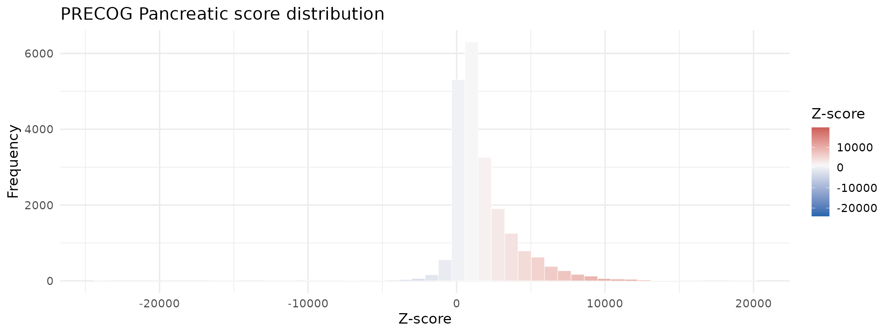
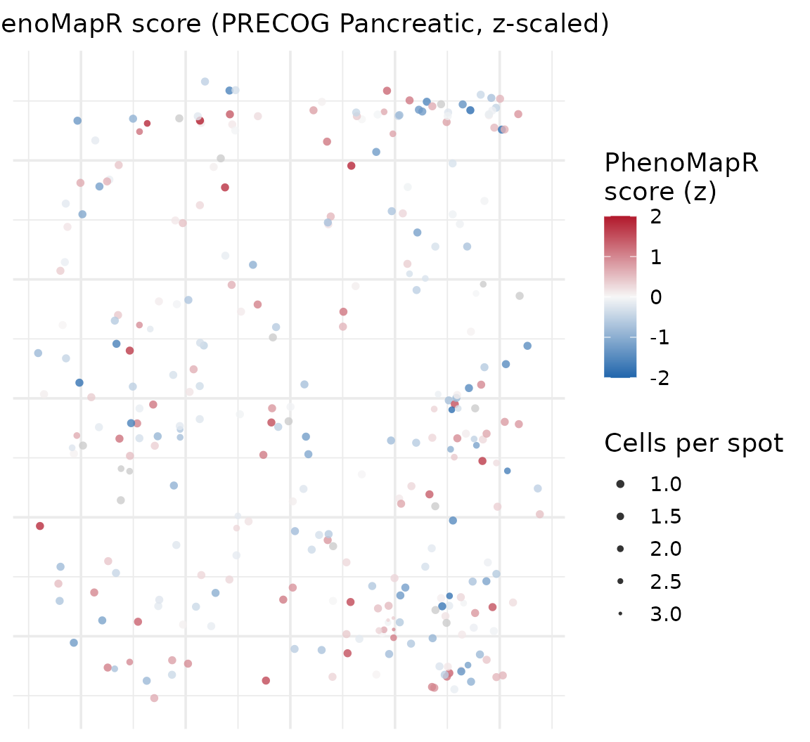
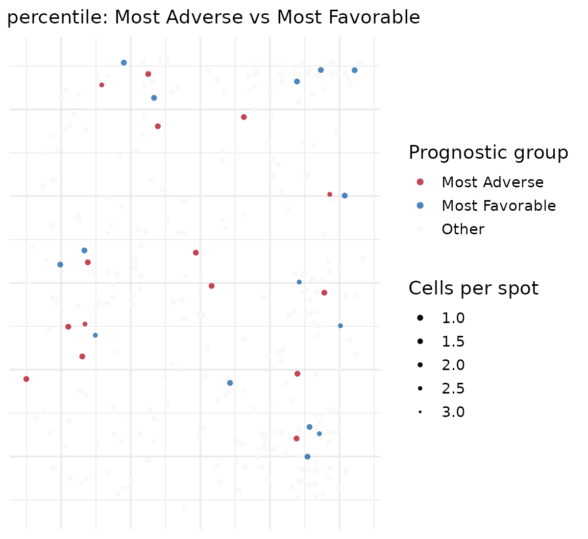
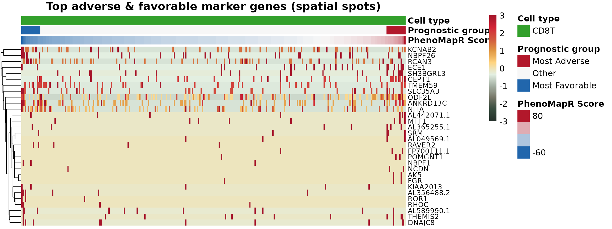
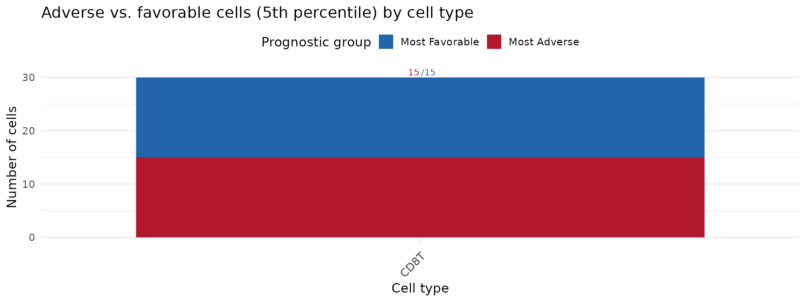

Scoring spatial transcriptomics with PhenoMapR
Source:vignettes/spatial-transcriptomics.Rmd
spatial-transcriptomics.RmdOverview
This vignette demonstrates using PhenoMapR on spatial
transcriptomics data. We use the processed spatial object
HT270P1-S1H2Fc2U1Z1Bs1-H2Bs2-Test_processed
(HT270P1-S1H2Fc2U1Z1Bs1-H2Bs2-Test_processed.rds) to score
spots with the PRECOG Pancreatic reference, define
adverse vs. favorable prognostic groups, and visualize both score
distributions and where PhenoMapR scores localize on
the tissue image. The workflow mirrors the single-cell vignette but adds
spatial plots to show score and prognostic group across the slide.
Load and setup
Load PhenoMapR and Seurat, and locate the spatial RDS file. Place
HT270P1-S1H2Fc2U1Z1Bs1-H2Bs2-Test_processed.rds in
vignettes/ or the project root (see vignettes/README.md).
suppressPackageStartupMessages(library(PhenoMapR))
suppressPackageStartupMessages(library(Seurat))
suppressPackageStartupMessages(library(ggplot2))
if (!exists("PhenoMap", mode = "function")) {
stop("PhenoMap not found. Reinstall PhenoMapR from source: devtools::install() or install.packages('.', repos = NULL, type = 'source')")
}
knitr::opts_chunk$set(fig.width = 12, out.width = "100%", warning = FALSE)
theme_set(theme_minimal(base_size = 14))
report_timing <- function(step_name, t0, obj = NULL) {
elapsed <- as.numeric(difftime(Sys.time(), t0, units = "secs"))
mem_mb <- if (!is.null(obj)) format(object.size(obj), units = "MB") else "-"
message(sprintf("[%s] Runtime: %.2f s | Memory: %s", step_name, elapsed, mem_mb))
}
# Vignette data: load from Google Drive only
if (!requireNamespace("googledrive", quietly = TRUE)) {
stop("The 'googledrive' package is required. Install with: install.packages('googledrive')")
}
vignette_dir <- if (dir.exists("vignettes")) "vignettes" else if (dir.exists("Vignettes")) "Vignettes" else "."
if (!dir.exists(vignette_dir)) dir.create(vignette_dir, recursive = TRUE, showWarnings = FALSE)
googledrive::drive_deauth()
rds_path <- file.path(vignette_dir, "HT270P1-S1H2Fc2U1Z1Bs1-H2Bs2-Test_processed.rds")
googledrive::drive_download(googledrive::as_id("1HM0dBrQnaNsdm5mnq23aaQ2ILofJ0_vj"), rds_path, overwrite = TRUE)## File downloaded:## • HT270P1-S1H2Fc2U1Z1Bs1-H2Bs2-Test_processed.rds
## <id: 1HM0dBrQnaNsdm5mnq23aaQ2ILofJ0_vj>## Saved locally as:## • ./HT270P1-S1H2Fc2U1Z1Bs1-H2Bs2-Test_processed.rds
has_data <- file.exists(rds_path)
knitr::opts_chunk$set(eval = has_data)
if (!has_data) {
message("Could not download spatial RDS from Google Drive.")
} else {
suppressMessages({
seurat <- PhenoMapR::load_rds_fast(rds_path)
update_fn <- tryCatch(
get("UpdateSeuratObject", envir = asNamespace("SeuratObject")),
error = function(e) get0("UpdateSeuratObject", envir = asNamespace("Seurat"), mode = "function")
)
if (is.function(update_fn)) {
seurat <- tryCatch(update_fn(seurat), error = function(e) seurat)
}
})
assay_use <- if ("Spatial" %in% names(seurat@assays)) "Spatial" else "RNA"
n_genes <- nrow(seurat)
n_spots <- ncol(seurat)
n_images <- length(seurat@images)
head(colnames(seurat@meta.data))
}## [1] "orig.ident" "nCount_Spatial" "nFeature_Spatial"
## [4] "Row.names" "Cell" "precog_score_pearson"Score spots with PRECOG Pancreatic
Apply PhenoMapR using the built-in PRECOG primary Pancreatic reference, then add scores to the Seurat object metadata.
suppressMessages({
scores_spatial <- PhenoMapR::PhenoMap(
expression = seurat,
reference = "precog",
cancer_type = "Pancreatic",
assay = assay_use,
slot = "data",
verbose = FALSE
)
seurat <- PhenoMapR::add_scores_to_seurat(seurat, scores_spatial)
})
score_col <- grep("weighted_sum_score", names(scores_spatial), value = TRUE)[1]
summary(seurat@meta.data[[score_col]])## Min. 1st Qu. Median Mean 3rd Qu. Max.
## -24009.6 487.3 1126.1 1782.4 2458.4 19771.5Score distribution
Distribution of PhenoMapR (PRECOG Pancreatic) scores across spots.
plot_score_distribution(
seurat@meta.data[[score_col]],
main = "PRECOG Pancreatic score (spatial spots)",
base_size = 14
)
Score by cell type or cluster (if available)
If the object has cell type or cluster annotations
(e.g. CellType), we can see how scores vary by group.
For HT270P1-S1H2Fc2U1Z1Bs1-H2Bs2-Test_processed, cell types may be in a
separate file from CytoSpace; we try to load a companion table and add
CellType to the object if it is not already in
meta.data.
# If CellType is missing, try a companion file (e.g. *_celltypes.csv or *_annotations.csv next to the RDS)
tried <- character(0)
if (!"CellType" %in% names(seurat@meta.data)) {
rds_dir <- dirname(rds_path)
rds_base <- sub("\\.rds$", "", basename(rds_path))
for (suffix in c("_celltypes.csv", "_annotations.csv", "_celltype.csv", "_metadata.csv")) {
f <- file.path(rds_dir, paste0(rds_base, suffix))
if (file.exists(f)) {
tried <- c(tried, f)
tab <- tryCatch(utils::read.csv(f, stringsAsFactors = FALSE), error = function(e) NULL)
if (!is.null(tab) && nrow(tab) > 0) {
# Find a column that looks like cell type (many unique character values) and one for cell/spot ID
id_col <- NULL
type_col <- NULL
for (c in c("CellType", "celltype", "cell_type", "annotation", "celltype_predicted")) {
if (c %in% names(tab)) { type_col <- c; break }
}
if (is.null(type_col)) type_col <- names(tab)[sapply(tab, function(x) is.character(x) || is.factor(x))][1]
for (c in c("cell", "barcode", "spot", "id", "Cell", "Barcode")) {
if (any(tolower(names(tab)) == tolower(c))) {
id_col <- names(tab)[tolower(names(tab)) == tolower(c)][1]
break
}
}
if (is.null(id_col)) id_col <- names(tab)[1]
if (!is.null(type_col) && type_col %in% names(tab)) {
types <- setNames(as.character(tab[[type_col]]), tab[[id_col]])
cells <- colnames(seurat)
match_idx <- match(cells, names(types))
if (sum(!is.na(match_idx)) > 0) {
seurat$CellType <- types[match_idx]
NULL
break
}
}
}
}
}
}
if (!"CellType" %in% names(seurat@meta.data) && length(tried) > 0) {
message("Companion files tried: ", paste(basename(tried), collapse = ", "), "; no match by cell ID.")
}
# Prefer CellType; then any column with 2--100 discrete levels (e.g. orig.ident, clusters)
spatial_celltype_pal <- NULL
spatial_celltype_col <- NULL
meta_names <- names(seurat@meta.data)
celltype_col <- NULL
for (c in c("CellType", "Celltype..major.lineage.", "cell_type", "celltype", "annotation", "seurat_clusters")) {
if (c %in% meta_names) {
celltype_col <- c
break
}
}
if (is.null(celltype_col)) {
idx <- grep("celltype|cluster|annotation", meta_names, ignore.case = TRUE)
if (length(idx) > 0) celltype_col <- meta_names[idx[1]]
}
# Last resort: use first metadata column that has 2--100 unique values (discrete grouping)
if (is.null(celltype_col)) {
for (c in meta_names) {
if (c == score_col) next
raw <- seurat@meta.data[[c]]
if (is.list(raw)) raw <- vapply(raw, function(x) as.character(x)[1], character(1))
else raw <- as.character(raw)
n_u <- length(unique(na.omit(raw)))
if (n_u >= 2L && n_u <= 100L) {
celltype_col <- c
break
}
}
}
df <- seurat@meta.data
n_meta <- nrow(df)
ann_vec <- NULL
if (!is.null(celltype_col)) {
raw <- df[[celltype_col]]
if (is.list(raw)) {
ann_vec <- vapply(raw, function(x) if (is.null(x) || length(x) == 0) NA_character_ else as.character(x)[1], character(1))
} else {
ann_vec <- as.vector(raw)
}
if (length(ann_vec) != n_meta) ann_vec <- NULL
}
if (is.null(ann_vec)) {
message("No annotation column with 2--100 levels found. To plot score by cell type, add a CellType column to the object (e.g. from a CytoSpace annotation file).")
df$annotation <- factor(rep("all", n_meta))
celltype_col <- "annotation"
seurat$annotation <- df$annotation
} else {
df$annotation <- factor(ann_vec, exclude = NULL)
}
n_levels <- length(levels(df$annotation))
# Allow 2--100 levels for boxplot (covers 16 cell types and similar datasets)
if (n_levels >= 2L && n_levels <= 100L) {
pal <- PhenoMapR::get_celltype_palette(levels(df$annotation))
print(ggplot(df, aes(
x = reorder(.data$annotation, .data[[score_col]], FUN = median),
y = .data[[score_col]],
fill = .data$annotation
)) +
geom_boxplot(outlier.alpha = 0.3) +
scale_fill_manual(values = pal, name = celltype_col) +
theme_minimal(base_size = 14) +
theme(
axis.text.x = element_text(angle = 45, hjust = 1, size = 12),
legend.position = "right"
) +
labs(y = "PRECOG Pancreatic score", x = celltype_col, title = "Score by annotation (spatial)"))
} else {
spatial_celltype_pal <- NULL
spatial_celltype_col <- NULL
message("Single or too many annotation levels (", n_levels, "); skipping boxplot.")
}
Define prognostic groups
Label spots as Most Adverse (top 5%), Most Favorable (bottom 5%), or Other, then attach to metadata for spatial plotting.
scores_df <- seurat@meta.data[, grep("weighted_sum_score", names(seurat@meta.data)), drop = FALSE]
groups <- PhenoMapR::define_prognostic_groups(scores_df, percentile = 0.05)
suppressMessages(seurat <- AddMetaData(seurat, groups))
group_col <- paste0("prognostic_group_", score_col)
if (!group_col %in% names(seurat@meta.data)) group_col <- grep("prognostic_group", names(seurat@meta.data), value = TRUE)[1]
table(seurat@meta.data[[group_col]], useNA = "ifany")##
## Most Adverse Most Favorable Other
## 1073 1073 19312Spatial plots: where do PhenoMapR scores localize?
We plot cell type, PhenoMapR score (z-scaled for display), and 5th percentile prognostic groups in spatial coordinates. High (red) scores indicate more adverse prognostic expression; low (blue) indicate more favorable.
suppressPackageStartupMessages(library(dplyr))
coords <- tryCatch(
suppressMessages(Seurat::GetTissueCoordinates(seurat)),
error = function(e) NULL
)
if (is.null(coords) && length(seurat@images) > 0L) {
img <- seurat@images[[1]]
coords <- tryCatch(img@coordinates, error = function(e) NULL)
}
# Fallback: look for row/col or imagerow/imagecol in metadata
if (is.null(coords) || nrow(coords) == 0) {
meta <- seurat@meta.data
for (pair in list(
c("row", "col"),
c("imagerow", "imagecol"),
c("x", "y"),
c("tile", "cell")
)) {
if (pair[1] %in% names(meta) && pair[2] %in% names(meta)) {
coords <- meta[, pair, drop = FALSE]
names(coords) <- c("row", "col")
break
}
}
}
if (!is.null(coords) && nrow(coords) > 0) {
if (!"row" %in% names(coords)) coords$row <- coords[[grep("row|imagerow|x", names(coords), ignore.case = TRUE)[1]]]
if (!"col" %in% names(coords)) coords$col <- coords[[grep("col|imagecol|y", names(coords), ignore.case = TRUE)[1]]]
spatial_df <- as.data.frame(seurat@meta.data)
spatial_df$cell_id <- rownames(spatial_df)
# Align coordinates by cell id (coords rownames match cell barcodes)
ids <- spatial_df$cell_id
spatial_df$row <- coords[match(ids, rownames(coords)), "row"]
spatial_df$col <- coords[match(ids, rownames(coords)), "col"]
if (!is.null(group_col)) spatial_df$prognostic_group <- spatial_df[[group_col]]
# Cell type for spatial: use spatial_celltype_col if set, else find CellType or any 2--100 level column
celltype_plot_col <- NULL
if (!is.null(spatial_celltype_col) && spatial_celltype_col %in% names(spatial_df)) {
celltype_plot_col <- spatial_celltype_col
} else if ("CellType" %in% names(spatial_df)) {
celltype_plot_col <- "CellType"
} else {
idx <- grep("celltype|cell_type|annotation", names(spatial_df), ignore.case = TRUE)
if (length(idx) > 0) celltype_plot_col <- names(spatial_df)[idx[1]]
}
if (is.null(celltype_plot_col)) {
for (c in setdiff(names(spatial_df), c(score_col, group_col, "cell_id", "row", "col", "prognostic_group"))) {
raw <- spatial_df[[c]]
if (is.list(raw)) raw <- vapply(raw, function(x) as.character(x)[1], character(1))
else raw <- as.character(raw)
if (length(unique(na.omit(raw))) >= 2L && length(unique(na.omit(raw))) <= 100L) {
celltype_plot_col <- c
break
}
}
}
if (!is.null(celltype_plot_col)) {
spatial_df$celltype_plot <- factor(spatial_df[[celltype_plot_col]], exclude = NULL)
spatial_df_celltype_col <- celltype_plot_col
n_lev <- length(levels(spatial_df$celltype_plot))
if (n_lev >= 2L && (is.null(spatial_celltype_pal) || length(spatial_celltype_pal) != n_lev)) {
spatial_celltype_pal <- PhenoMapR::get_celltype_palette(levels(spatial_df$celltype_plot))
spatial_celltype_col <- celltype_plot_col
}
} else {
spatial_df$celltype_plot <- NULL
spatial_df_celltype_col <- NULL
}
spatial_df <- spatial_df %>%
group_by(.data$row, .data$col) %>%
mutate(points_per_location = n()) %>%
ungroup()
# Scaled PhenoMapR score (z-score) for gradient plot so colors show variation
if (score_col %in% names(spatial_df)) {
raw_score <- as.numeric(spatial_df[[score_col]])
spatial_df$phenomapr_scaled <- as.numeric(scale(raw_score))
} else {
spatial_df$phenomapr_scaled <- NA_real_
}
# Shared jitter and point size so all three spatial plots match (multiple cells per spot)
rng_row <- diff(range(spatial_df$row, na.rm = TRUE))
rng_col <- diff(range(-spatial_df$col, na.rm = TRUE))
spatial_jitter_w <- max(0.15, if (rng_row > 0) rng_row * 0.025 else 0.15)
spatial_jitter_h <- max(0.15, if (rng_col > 0) rng_col * 0.025 else 0.15)
spatial_point_range <- c(0.5, 1.6)
has_spatial_coords <- TRUE
} else {
has_spatial_coords <- FALSE
message("No spatial coordinates found; skipping spatial plots.")
}Where cell types are
if (exists("has_spatial_coords") && has_spatial_coords && !is.null(spatial_df$celltype_plot) &&
length(levels(spatial_df$celltype_plot)) >= 2L) {
ct_col <- if (exists("spatial_df_celltype_col") && !is.null(spatial_df_celltype_col)) spatial_df_celltype_col else spatial_celltype_col
ct_freq <- sort(table(spatial_df$celltype_plot, useNA = "no"), decreasing = TRUE)
ct_order <- names(ct_freq)
spatial_df$celltype_zorder <- as.numeric(factor(as.character(spatial_df$celltype_plot), levels = ct_order))
ct_pal <- if (!is.null(spatial_celltype_pal)) spatial_celltype_pal else PhenoMapR::get_celltype_palette(levels(spatial_df$celltype_plot))
p3 <- ggplot(spatial_df, aes(x = .data$row, y = -.data$col, color = .data$celltype_plot,
size = points_per_location, zorder = .data$celltype_zorder)) +
geom_jitter(alpha = 0.8, width = spatial_jitter_w, height = spatial_jitter_h, shape = 16) +
ggtitle(paste("Cell type (", ct_col, ")", sep = "")) +
scale_color_manual(values = ct_pal, name = ct_col, na.value = "grey90") +
scale_size_continuous(range = spatial_point_range, trans = "reverse", name = "Cells per spot") +
theme_minimal(base_size = 14) +
theme(
plot.title = element_text(hjust = 0.5, size = 14),
axis.text = element_blank(),
axis.ticks = element_blank(),
axis.title = element_blank()
)
print(p3)
}
Where raw PhenoMapR scores are
Spatial map of PhenoMapR score (z-scaled for color gradient). Blue = more favorable, red = more adverse.
if (exists("has_spatial_coords") && has_spatial_coords) {
score_vals <- spatial_df$phenomapr_scaled
p1 <- ggplot(spatial_df, aes(x = .data$row, y = -.data$col, color = score_vals,
size = points_per_location, zorder = score_vals)) +
geom_jitter(alpha = 0.8, width = spatial_jitter_w, height = spatial_jitter_h, shape = 16) +
ggtitle("PhenoMapR score (PRECOG Pancreatic, z-scaled)") +
scale_color_gradientn(
colors = colorRampPalette(c("#2166AC", "#F7F7F7", "#B2182B"))(100),
name = "PhenoMapR\nscore (z)",
limits = c(-2, 2),
na.value = "grey80"
) +
scale_size_continuous(range = spatial_point_range, trans = "reverse", name = "Cells per spot") +
theme_minimal(base_size = 14) +
theme(
plot.title = element_text(hjust = 0.5, size = 14),
axis.text = element_blank(),
axis.ticks = element_blank(),
axis.title = element_blank()
)
print(p1)
}
Where 5th percentile cells are
Spatial map of prognostic groups: top 5% (Most Adverse), bottom 5% (Most Favorable), and the rest (Other).
if (exists("has_spatial_coords") && has_spatial_coords && !is.null(group_col)) {
pg <- as.character(spatial_df$prognostic_group)
df_other <- spatial_df[pg == "Other" | is.na(pg), ]
df_extreme <- spatial_df[pg %in% c("Most Adverse", "Most Favorable"), ]
p2 <- ggplot() +
geom_jitter(data = df_other, aes(x = .data$row, y = -.data$col, color = .data$prognostic_group,
size = points_per_location), alpha = 0.8, width = spatial_jitter_w, height = spatial_jitter_h, shape = 16) +
geom_jitter(data = df_extreme, aes(x = .data$row, y = -.data$col, color = .data$prognostic_group,
size = points_per_location), alpha = 0.8, width = spatial_jitter_w, height = spatial_jitter_h, shape = 16) +
ggtitle("5th percentile: Most Adverse vs Most Favorable") +
scale_color_manual(
values = c(`Most Adverse` = "#B2182B", Other = "#f7f7f7", `Most Favorable` = "#2166AC"),
name = "Prognostic group",
na.value = "grey90",
drop = FALSE
) +
scale_size_continuous(range = spatial_point_range, trans = "reverse", name = "Cells per spot") +
theme_minimal(base_size = 14) +
theme(
plot.title = element_text(hjust = 0.5, size = 14),
axis.text = element_blank(),
axis.ticks = element_blank(),
axis.title = element_blank()
)
print(p2)
}
Prognostic markers
We first find marker genes for adverse vs. favorable spots, visualize them in a heatmap (similar to the single-cell vignette), then define unique markers for each adverse/favorable cell type combination (e.g. adverse ductal, favorable B cell) and visualize those in a second heatmap.
Step 1: Markers for adverse vs. favorable spots
markers <- NULL
assay_markers <- NULL
if (!is.null(group_col)) {
cells <- colnames(seurat)
group_vec <- seurat@meta.data[cells, group_col]
group_df <- data.frame(
cell_id = cells,
prognostic_group = as.character(group_vec),
stringsAsFactors = FALSE
)
for (a in unique(c(assay_use, "RNA", "SCT"))) {
if (!a %in% names(seurat@assays)) next
markers <- tryCatch(
PhenoMapR::find_prognostic_markers(
seurat,
group_labels = group_df,
group_column = "prognostic_group",
cell_id_column = "cell_id",
assay = a,
slot = "data",
max_cells_per_ident = 5000L,
verbose = FALSE
),
error = function(e) {
message("find_prognostic_markers (assay ", a, ") error: ", conditionMessage(e))
NULL
}
)
if (!is.null(markers) && (nrow(markers$adverse_markers) > 0 || nrow(markers$favorable_markers) > 0)) {
assay_markers <- a
break
}
}
if (!is.null(markers)) {
message("Adverse markers (top 5):")
print(head(markers$adverse_markers, 5))
message("Favorable markers (top 5):")
print(head(markers$favorable_markers, 5))
} else {
message("Marker analysis returned no results. Check that Most Adverse and Most Favorable groups have enough cells.")
}
}## Adverse markers (top 5):## p_val avg_log2FC pct_in_group pct_rest gene p_adj
## 1 0 3.221594 0.829 0.100 MET 0
## 2 0 2.425253 0.870 0.159 MECOM 0
## 3 0 3.033991 0.916 0.210 ITGA2 0
## 4 0 2.679157 0.851 0.152 BAIAP2L1 0
## 5 0 2.662331 0.801 0.105 RASEF 0## Favorable markers (top 5):## p_val avg_log2FC pct_in_group pct_rest gene p_adj
## 1 0 4.271152 0.627 0.064 NRXN1 0
## 2 0 5.161995 0.626 0.066 RIMS2 0
## 3 0 5.324439 0.640 0.081 KCNMB2 0
## 4 0 5.275982 0.595 0.041 ABCC8 0
## 5 0 5.057609 0.589 0.036 TMEM132D 0Step 2: Heatmap of adverse vs. favorable markers
if (exists("markers") && !is.null(markers)) {
n_top <- 15
expr <- NULL
assay_order <- unique(c(
if (exists("assay_markers") && !is.null(assay_markers)) assay_markers else character(0),
assay_use, "RNA", "SCT"
))
for (a in assay_order) {
if (!a %in% names(seurat@assays)) next
expr <- tryCatch(
Seurat::GetAssayData(seurat, layer = "data", assay = a),
error = function(e) tryCatch(Seurat::GetAssayData(seurat, slot = "data", assay = a), error = function(e2) NULL)
)
if (!is.null(expr) && nrow(expr) > 0 && ncol(expr) > 0) break
expr <- tryCatch(
SeuratObject::LayerData(seurat, layer = "data", assay = a),
error = function(e) NULL
)
if (is.null(expr) || ncol(expr) == 0) {
expr <- tryCatch(
SeuratObject::LayerData(seurat, layer = "counts", assay = a),
error = function(e) tryCatch(SeuratObject::LayerData(seurat, layer = NULL, assay = a), error = function(e2) NULL)
)
}
if (!is.null(expr) && nrow(expr) > 0 && ncol(expr) > 0) break
}
if (!is.null(expr) && ncol(expr) > 0) {
adverse_pos <- markers$adverse_markers
if (nrow(adverse_pos) > 0 && "avg_log2FC" %in% names(adverse_pos)) adverse_pos <- adverse_pos[adverse_pos$avg_log2FC > 0, ]
favorable_pos <- markers$favorable_markers
if (nrow(favorable_pos) > 0 && "avg_log2FC" %in% names(favorable_pos)) favorable_pos <- favorable_pos[favorable_pos$avg_log2FC > 0, ]
pcol <- if ("p_adj" %in% names(markers$adverse_markers)) "p_adj" else if ("p_val_adj" %in% names(markers$adverse_markers)) "p_val_adj" else "p_val"
top_genes <- unique(c(
if (nrow(adverse_pos) > 0 && "gene" %in% names(adverse_pos)) head(adverse_pos$gene[order(adverse_pos[[pcol]])], n_top) else character(0),
if (nrow(favorable_pos) > 0 && "gene" %in% names(favorable_pos)) head(favorable_pos$gene[order(favorable_pos[[pcol]])], n_top) else character(0)
))
top_genes <- top_genes[top_genes %in% rownames(expr)]
if (length(top_genes) == 0) top_genes <- head(rownames(expr), 20)
cells_expr <- colnames(expr)
if (is.null(cells_expr)) cells_expr <- character(0)
cells_obj <- colnames(seurat)
cells_meta <- rownames(seurat@meta.data)
cells_use <- intersect(cells_expr, cells_obj)
if (length(cells_use) == 0 && length(cells_meta) > 0) {
cells_use <- intersect(cells_expr, cells_meta)
}
if (length(cells_use) == 0 && length(cells_expr) > 0 && any(grepl("_", cells_expr, fixed = TRUE))) {
stripped <- sub("^[^_]+_", "", cells_expr)
cells_use <- intersect(stripped, cells_obj)
if (length(cells_use) == 0) cells_use <- intersect(stripped, cells_meta)
if (length(cells_use) > 0) {
expr_cols <- vapply(cells_use, function(c) cells_expr[which(stripped == c)[1]], character(1))
expr <- expr[, expr_cols, drop = FALSE]
colnames(expr) <- cells_use
}
}
if (length(cells_use) == 0) {
message("No overlapping cells between expression and metadata; skipping heatmap. ",
"expr ncol=", length(cells_expr), ", obj ncol=", length(cells_obj),
if (length(cells_expr) > 0) paste0("; expr sample: ", head(cells_expr, 2)) else "")
} else {
mat <- as.matrix(expr[top_genes, cells_use, drop = FALSE])
mat_scaled <- t(scale(t(mat)))
mat_scaled[mat_scaled < -3] <- -3
mat_scaled[mat_scaled > 3] <- 3
meta <- seurat@meta.data[cells_use, , drop = FALSE]
ord <- order(meta[[score_col]])
mat_scaled <- mat_scaled[, ord, drop = FALSE]
meta_ord <- meta[ord, , drop = FALSE]
group_col_heatmap <- paste0("prognostic_group_", score_col)
if (!group_col_heatmap %in% names(meta_ord)) group_col_heatmap <- group_col
if (requireNamespace("pheatmap", quietly = TRUE)) {
ann_col <- data.frame(
`PhenoMapR Score` = meta_ord[[score_col]],
`Prognostic group` = factor(meta_ord[[group_col_heatmap]], levels = c("Most Adverse", "Other", "Most Favorable")),
check.names = FALSE
)
ct_col_ann <- if (exists("spatial_df_celltype_col") && !is.null(spatial_df_celltype_col)) spatial_df_celltype_col else if (exists("celltype_col") && !is.null(celltype_col)) celltype_col else NULL
if (!is.null(ct_col_ann) && ct_col_ann %in% names(meta_ord)) {
ann_col$`Cell type` <- factor(meta_ord[[ct_col_ann]])
}
rownames(ann_col) <- colnames(mat_scaled)
pal_score <- colorRampPalette(c("#2166AC", "#F7F7F7", "#B2182B"))(100)
pal_group <- c(`Most Adverse` = "#B2182B", Other = "#f7f7f7", `Most Favorable` = "#2166AC")
pal_celltype <- if ("Cell type" %in% names(ann_col)) {
PhenoMapR::get_celltype_palette(levels(ann_col$`Cell type`))
} else list()
ann_colors <- list(
`PhenoMapR Score` = pal_score,
`Prognostic group` = pal_group
)
if (length(pal_celltype) > 0) ann_colors$`Cell type` <- pal_celltype
heatmap_colors <- if (requireNamespace("paletteer", quietly = TRUE)) {
colorRampPalette(paletteer::paletteer_d("MexBrewer::Vendedora"))(100)
} else {
colorRampPalette(c("#2166AC", "#F7F7F7", "#B2182B"))(100)
}
pheatmap::pheatmap(
mat_scaled,
scale = "none",
cluster_cols = FALSE,
cluster_rows = TRUE,
show_colnames = FALSE,
annotation_col = ann_col,
annotation_colors = ann_colors,
color = heatmap_colors,
breaks = seq(-3, 3, length.out = 101),
main = "Top adverse & favorable marker genes (spatial spots)",
fontsize = 12,
fontsize_row = 10,
treeheight_row = 25
)
}
}
} else {
msg <- "Could not retrieve expression data for heatmap"
if (!is.null(expr)) {
msg <- paste0(msg, " (expr nrow=", nrow(expr), ", ncol=", ncol(expr), "; try LayerData for Seurat v5)")
}
message(msg, ".")
}
}
Stacked barplot: adverse vs. favorable by cell type
Each column is a cell type; the height is filled by the number of adverse (5th percentile) or favorable (5th percentile) cells.
if (!is.null(group_col)) {
ct_col_bar <- NULL
if (exists("spatial_df_celltype_col") && !is.null(spatial_df_celltype_col) && spatial_df_celltype_col %in% names(seurat@meta.data)) {
ct_col_bar <- spatial_df_celltype_col
} else if (exists("celltype_col") && !is.null(celltype_col) && celltype_col %in% names(seurat@meta.data)) {
ct_col_bar <- celltype_col
} else {
for (c in c("CellType", "Celltype..major.lineage.", "cell_type", "celltype", "annotation", "seurat_clusters")) {
if (c %in% names(seurat@meta.data) && length(unique(na.omit(seurat@meta.data[[c]]))) >= 2) {
ct_col_bar <- c
break
}
}
}
if (!is.null(ct_col_bar)) {
meta <- seurat@meta.data
meta$pg <- meta[[group_col]]
meta$ct <- as.character(meta[[ct_col_bar]])
meta$ct_ok <- !is.na(meta$ct) & nzchar(trimws(meta$ct))
idx_extreme <- meta$pg %in% c("Most Adverse", "Most Favorable") & meta$ct_ok
df_bar <- as.data.frame(table(
CellType = meta$ct[idx_extreme],
Prognostic_group = meta$pg[idx_extreme],
useNA = "no"
))
if (nrow(df_bar) > 0) {
df_bar$Prognostic_group <- factor(df_bar$Prognostic_group, levels = c("Most Favorable", "Most Adverse"))
pal_bar <- c(`Most Adverse` = "#B2182B", `Most Favorable` = "#2166AC")
adverse <- df_bar[df_bar$Prognostic_group == "Most Adverse", c("CellType", "Freq")]
fav <- df_bar[df_bar$Prognostic_group == "Most Favorable", c("CellType", "Freq")]
names(adverse)[2] <- "n_adverse"
names(fav)[2] <- "n_fav"
df_labels <- merge(adverse, fav, by = "CellType", all = TRUE)
df_labels$n_adverse[is.na(df_labels$n_adverse)] <- 0
df_labels$n_fav[is.na(df_labels$n_fav)] <- 0
df_labels$label <- paste0(df_labels$n_adverse, "/", df_labels$n_fav)
df_labels$total <- df_labels$n_adverse + df_labels$n_fav
ct_ord <- levels(reorder(df_bar$CellType, df_bar$Freq, function(x) -sum(x)))
df_labels$CellType <- factor(df_labels$CellType, levels = ct_ord)
p_bar <- ggplot(df_bar, aes(x = reorder(.data$CellType, .data$Freq, function(x) -sum(x)), y = .data$Freq, fill = .data$Prognostic_group)) +
geom_col(position = "stack") +
geom_text(data = df_labels, aes(x = .data$CellType, y = .data$total, label = .data$n_adverse),
inherit.aes = FALSE, vjust = -0.3, size = 3.5, color = "#B2182B", hjust = 1.05) +
geom_text(data = df_labels, aes(x = .data$CellType, y = .data$total, label = paste0("/", .data$n_fav)),
inherit.aes = FALSE, vjust = -0.3, size = 3.5, color = "#2166AC", hjust = -0.05) +
scale_fill_manual(values = pal_bar) +
labs(x = "Cell type", y = "Number of cells", fill = "Prognostic group",
title = "Adverse vs. favorable cells (5th percentile) by cell type") +
theme_minimal(base_size = 14) +
theme(axis.text.x = element_text(angle = 45, hjust = 1, size = 12), legend.position = "top")
print(p_bar)
}
}
}
Step 3: Unique markers for adverse/favorable cell types
For each combination of prognostic group and cell type (e.g. adverse ductal, favorable B cell), we find genes that are uniquely upregulated in that group vs. all other spots.
markers_by_ct <- NULL
ct_col_markers <- NULL
cat("Step 3: Finding unique markers for adverse/favorable cell types...\n")## Step 3: Finding unique markers for adverse/favorable cell types...
if (is.null(group_col)) {
cat("Skipping: prognostic groups not defined (group_col is NULL).\n")
} else {
celltype_for_markers <- NULL
if (exists("spatial_df_celltype_col") && !is.null(spatial_df_celltype_col) && spatial_df_celltype_col %in% names(seurat@meta.data)) {
celltype_for_markers <- spatial_df_celltype_col
} else if (exists("celltype_col") && !is.null(celltype_col) && celltype_col %in% names(seurat@meta.data)) {
celltype_for_markers <- celltype_col
} else {
for (c in c("CellType", "Celltype..major.lineage.", "cell_type", "celltype", "annotation", "seurat_clusters")) {
if (c %in% names(seurat@meta.data) && length(unique(na.omit(seurat@meta.data[[c]]))) >= 2) {
celltype_for_markers <- c
break
}
}
}
if (is.null(celltype_for_markers)) {
cat("Skipping: no cell type column found in metadata.\n")
} else {
cat("Using cell type column:", celltype_for_markers, "\n")
meta <- seurat@meta.data
meta$pg <- meta[[group_col]]
meta$ct <- as.character(meta[[celltype_for_markers]])
meta$ct_ok <- !is.na(meta$ct) & nzchar(trimws(meta$ct))
meta$combined_group <- "Other"
meta$combined_group[meta$pg == "Most Adverse" & meta$ct_ok] <- paste0("Adverse_", gsub(" ", "_", meta$ct[meta$pg == "Most Adverse" & meta$ct_ok]))
meta$combined_group[meta$pg == "Most Favorable" & meta$ct_ok] <- paste0("Favorable_", gsub(" ", "_", meta$ct[meta$pg == "Most Favorable" & meta$ct_ok]))
idx_keep <- meta$pg %in% c("Most Adverse", "Most Favorable") & meta$ct_ok
combined_tab <- table(meta$combined_group[idx_keep], useNA = "no")
min_cells <- 10L
combined_lev <- names(combined_tab)[combined_tab >= min_cells]
if (length(combined_lev) >= 1L) {
cat("Groups with >=", min_cells, " cells:", paste(combined_lev, collapse = ", "), "\n")
seurat$PhenoMapR_combined_group <- meta$combined_group
all_lev <- c(combined_lev, "Other")
seurat$PhenoMapR_combined_group <- factor(seurat$PhenoMapR_combined_group, levels = all_lev)
assay_fa <- if (exists("assay_markers") && !is.null(assay_markers) && assay_markers %in% names(seurat@assays)) {
assay_markers
} else if (assay_use %in% names(seurat@assays)) {
assay_use
} else {
"RNA"
}
cat("Using assay for FindAllMarkers:", assay_fa, "(full object, ncol=", ncol(seurat), ")\n")
find_args <- list(
seurat,
assay = assay_fa,
group.by = "PhenoMapR_combined_group",
test.use = "wilcox",
min.pct = 0.05,
logfc.threshold = 0.1,
max.cells.per.ident = 3000,
verbose = FALSE,
only.pos = TRUE,
return.thresh = 0.05
)
if ("layer" %in% names(formals(Seurat::FindAllMarkers))) {
find_args$layer <- "data"
} else {
find_args$slot <- "data"
}
markers_by_ct <- tryCatch(
do.call(Seurat::FindAllMarkers, find_args),
error = function(e) {
cat("FindAllMarkers (cell-type-specific) failed:", conditionMessage(e), "\n")
NULL
}
)
if (!is.null(markers_by_ct) && nrow(markers_by_ct) == 0) {
cat("No markers with min.pct=0.05, logfc.threshold=0.1, return.thresh=0.05; retrying with relaxed thresholds...\n")
find_args$min.pct <- 0
find_args$logfc.threshold <- 0
markers_by_ct <- tryCatch(
do.call(Seurat::FindAllMarkers, find_args),
error = function(e) NULL
)
}
if (!is.null(markers_by_ct) && nrow(markers_by_ct) == 0) {
cat("Retrying with return.thresh=1 (return all genes regardless of p-value)...\n")
find_args$return.thresh <- 1
markers_by_ct <- tryCatch(
do.call(Seurat::FindAllMarkers, find_args),
error = function(e) NULL
)
if (!is.null(markers_by_ct) && nrow(markers_by_ct) > 0) {
markers_by_ct <- markers_by_ct[markers_by_ct$p_val_adj < 0.05, , drop = FALSE]
cat("Filtered to p_val_adj < 0.05:", nrow(markers_by_ct), "markers.\n")
}
}
if (!is.null(markers_by_ct) && nrow(markers_by_ct) > 0) {
markers_by_ct <- markers_by_ct[markers_by_ct$cluster %in% combined_lev, , drop = FALSE]
if (nrow(markers_by_ct) > 0) {
ct_col_markers <- celltype_for_markers
cat("Found markers for", length(unique(markers_by_ct$cluster)), "adverse/favorable cell type groups.\n")
print(head(markers_by_ct[, c("gene", "cluster", "avg_log2FC", "p_val_adj")], 10))
} else {
cat("FindAllMarkers returned markers only for excluded groups (after filtering to adverse/favorable).\n")
}
} else {
if (is.null(markers_by_ct)) {
cat("FindAllMarkers failed or returned NULL.\n")
} else {
cat("FindAllMarkers returned 0 marker genes.\n")
}
tab_ct <- table(seurat$PhenoMapR_combined_group, useNA = "no")
cat("Diagnostic: cells per group:", paste(names(tab_ct), "=", tab_ct, collapse = ", "), "\n")
cat("Diagnostic: assay", assay_fa, "\n")
}
} else {
cat("Insufficient cells in adverse/favorable cell type combinations (need >=", min_cells, " per group).\n")
cat("Group counts:", paste(names(combined_tab), "=", combined_tab, collapse = ", "), "\n")
}
}
}## Using cell type column: CellType
## Groups with >= 10 cells: Adverse_Acinar, Adverse_Ductal, Adverse_Endothelial, Adverse_Fibroblast, Adverse_Macrophage, Adverse_Plasma, Favorable_Acinar, Favorable_Alpha, Favorable_Beta, Favorable_Delta, Favorable_Ductal, Favorable_Fibroblast, Favorable_Plasma, Favorable_Schwann
## Using assay for FindAllMarkers: Spatial (full object, ncol= 21458 )## No markers with min.pct=0.05, logfc.threshold=0.1, return.thresh=0.05; retrying with relaxed thresholds...## Retrying with return.thresh=1 (return all genes regardless of p-value)...## FindAllMarkers returned 0 marker genes.
## Diagnostic: cells per group: Adverse_Acinar = 21, Adverse_Ductal = 784, Adverse_Endothelial = 52, Adverse_Fibroblast = 157, Adverse_Macrophage = 26, Adverse_Plasma = 24, Favorable_Acinar = 11, Favorable_Alpha = 427, Favorable_Beta = 173, Favorable_Delta = 13, Favorable_Ductal = 22, Favorable_Fibroblast = 105, Favorable_Plasma = 296, Favorable_Schwann = 20, Other = 19312
## Diagnostic: assay SpatialStep 4: Heatmap of cell-type-specific markers
cat("Step 4: Heatmap of cell-type-specific markers...\n")## Step 4: Heatmap of cell-type-specific markers...
if (exists("markers_by_ct") && !is.null(markers_by_ct) && nrow(markers_by_ct) > 0 && exists("ct_col_markers") && !is.null(ct_col_markers)) {
suppressPackageStartupMessages(library(dplyr))
n_top_per_group <- 5
top_genes_ct <- markers_by_ct %>%
group_by(.data$cluster) %>%
slice_min(.data$p_val_adj, n = n_top_per_group) %>%
pull(.data$gene) %>%
unique()
top_genes_ct <- top_genes_ct[top_genes_ct %in% rownames(seurat)]
if (length(top_genes_ct) > 0) {
expr <- tryCatch(
Seurat::GetAssayData(seurat, layer = "data", assay = assay_use),
error = function(e) Seurat::GetAssayData(seurat, slot = "data", assay = assay_use)
)
if (is.null(expr) || ncol(expr) == 0) {
expr <- tryCatch(
SeuratObject::LayerData(seurat, layer = "data", assay = assay_use),
error = function(e) tryCatch(SeuratObject::LayerData(seurat, layer = "counts", assay = assay_use), error = function(e2) NULL)
)
}
if (!is.null(expr) && ncol(expr) > 0) {
mat <- as.matrix(expr[top_genes_ct, , drop = FALSE])
mat_scaled <- t(scale(t(mat)))
mat_scaled[mat_scaled < -3] <- -3
mat_scaled[mat_scaled > 3] <- 3
meta <- seurat@meta.data
meta$pg <- meta[[group_col]]
meta$ct <- as.character(meta[[ct_col_markers]])
meta$ct_ok <- !is.na(meta$ct) & nzchar(trimws(meta$ct))
meta$combined_group <- "Other"
meta$combined_group[meta$pg == "Most Adverse" & meta$ct_ok] <- paste0("Adverse_", gsub(" ", "_", meta$ct[meta$pg == "Most Adverse" & meta$ct_ok]))
meta$combined_group[meta$pg == "Most Favorable" & meta$ct_ok] <- paste0("Favorable_", gsub(" ", "_", meta$ct[meta$pg == "Most Favorable" & meta$ct_ok]))
ord <- order(meta$combined_group, meta[[score_col]])
mat_scaled <- mat_scaled[, ord, drop = FALSE]
meta_ord <- meta[ord, ]
if (requireNamespace("pheatmap", quietly = TRUE)) {
ann_col <- data.frame(
`Prognostic × Cell type` = factor(meta_ord$combined_group),
`PhenoMapR Score` = meta_ord[[score_col]],
check.names = FALSE
)
rownames(ann_col) <- colnames(mat_scaled)
pal_score <- colorRampPalette(c("#2166AC", "#F7F7F7", "#B2182B"))(100)
heatmap_colors <- if (requireNamespace("paletteer", quietly = TRUE)) {
colorRampPalette(paletteer::paletteer_d("MexBrewer::Vendedora"))(100)
} else {
colorRampPalette(c("#2166AC", "#F7F7F7", "#B2182B"))(100)
}
ann_colors <- list(
`PhenoMapR Score` = pal_score
)
pheatmap::pheatmap(
mat_scaled,
scale = "none",
cluster_cols = FALSE,
cluster_rows = TRUE,
show_colnames = FALSE,
annotation_col = ann_col,
annotation_colors = ann_colors,
color = heatmap_colors,
breaks = seq(-3, 3, length.out = 101),
main = "Unique markers by adverse/favorable cell type (spatial spots)",
fontsize = 12,
fontsize_row = 10,
treeheight_row = 25
)
}
} else {
cat("Could not retrieve expression data for cell-type heatmap.\n")
}
}
} else {
cat("Skipping heatmap: no cell-type-specific markers found in Step 3.\n")
}## Skipping heatmap: no cell-type-specific markers found in Step 3.Summary
-
Data: Processed spatial object
(
HT270P1-S1H2Fc2U1Z1Bs1-H2Bs2-Test_processed.rds). - Scoring: PhenoMapR with PRECOG Pancreatic; scores added to Seurat metadata.
- Plots: Score distribution, score by annotation (if present), prognostic groups, and spatial maps of cell type, continuous score, and prognostic group (points ordered so less frequent groups are drawn on top for visibility).
- Markers: (1) Adverse vs. favorable markers with heatmap; (2) unique markers for each adverse/favorable cell type combination (e.g. adverse ductal, favorable B cell) with a second heatmap.
References
- PRECOG 2.0: Benard B, Lalgudi S, et al. PRECOG 2.0: an updated resource of pan-cancer gene-level prognostic meta-z scores. Nucleic Acids Research. 2026.
Session Info
## R version 4.5.3 (2026-03-11)
## Platform: x86_64-pc-linux-gnu
## Running under: Ubuntu 24.04.3 LTS
##
## Matrix products: default
## BLAS: /usr/lib/x86_64-linux-gnu/openblas-pthread/libblas.so.3
## LAPACK: /usr/lib/x86_64-linux-gnu/openblas-pthread/libopenblasp-r0.3.26.so; LAPACK version 3.12.0
##
## locale:
## [1] LC_CTYPE=C.UTF-8 LC_NUMERIC=C LC_TIME=C.UTF-8
## [4] LC_COLLATE=C.UTF-8 LC_MONETARY=C.UTF-8 LC_MESSAGES=C.UTF-8
## [7] LC_PAPER=C.UTF-8 LC_NAME=C LC_ADDRESS=C
## [10] LC_TELEPHONE=C LC_MEASUREMENT=C.UTF-8 LC_IDENTIFICATION=C
##
## time zone: UTC
## tzcode source: system (glibc)
##
## attached base packages:
## [1] stats graphics grDevices utils datasets methods base
##
## other attached packages:
## [1] dplyr_1.2.0 ggplot2_4.0.2 Seurat_5.4.0 SeuratObject_5.3.0
## [5] sp_2.2-1 PhenoMapR_0.1.0
##
## loaded via a namespace (and not attached):
## [1] RColorBrewer_1.1-3 jsonlite_2.0.0 magrittr_2.0.4
## [4] spatstat.utils_3.2-2 farver_2.1.2 rmarkdown_2.30
## [7] fs_1.6.7 ragg_1.5.1 vctrs_0.7.1
## [10] ROCR_1.0-12 spatstat.explore_3.7-0 paletteer_1.7.0
## [13] htmltools_0.5.9 curl_7.0.0 sass_0.4.10
## [16] sctransform_0.4.3 parallelly_1.46.1 KernSmooth_2.23-26
## [19] bslib_0.10.0 htmlwidgets_1.6.4 desc_1.4.3
## [22] ica_1.0-3 plyr_1.8.9 plotly_4.12.0
## [25] zoo_1.8-15 cachem_1.1.0 igraph_2.2.2
## [28] mime_0.13 lifecycle_1.0.5 pkgconfig_2.0.3
## [31] Matrix_1.7-4 R6_2.6.1 fastmap_1.2.0
## [34] fitdistrplus_1.2-6 future_1.69.0 shiny_1.13.0
## [37] digest_0.6.39 rematch2_2.1.2 patchwork_1.3.2
## [40] tensor_1.5.1 prismatic_1.1.2 RSpectra_0.16-2
## [43] irlba_2.3.7 textshaping_1.0.5 labeling_0.4.3
## [46] progressr_0.18.0 spatstat.sparse_3.1-0 httr_1.4.8
## [49] polyclip_1.10-7 abind_1.4-8 compiler_4.5.3
## [52] gargle_1.6.1 withr_3.0.2 S7_0.2.1
## [55] fastSave_0.1.0 fastDummies_1.7.5 MASS_7.3-65
## [58] tools_4.5.3 lmtest_0.9-40 otel_0.2.0
## [61] googledrive_2.1.2 httpuv_1.6.16 future.apply_1.20.2
## [64] goftest_1.2-3 glue_1.8.0 nlme_3.1-168
## [67] promises_1.5.0 grid_4.5.3 Rtsne_0.17
## [70] cluster_2.1.8.2 reshape2_1.4.5 generics_0.1.4
## [73] gtable_0.3.6 spatstat.data_3.1-9 tidyr_1.3.2
## [76] data.table_1.18.2.1 spatstat.geom_3.7-0 RcppAnnoy_0.0.23
## [79] ggrepel_0.9.7 RANN_2.6.2 pillar_1.11.1
## [82] stringr_1.6.0 spam_2.11-3 RcppHNSW_0.6.0
## [85] limma_3.66.0 later_1.4.8 splines_4.5.3
## [88] lattice_0.22-9 survival_3.8-6 deldir_2.0-4
## [91] tidyselect_1.2.1 miniUI_0.1.2 pbapply_1.7-4
## [94] knitr_1.51 gridExtra_2.3 scattermore_1.2
## [97] xfun_0.56 statmod_1.5.1 matrixStats_1.5.0
## [100] pheatmap_1.0.13 stringi_1.8.7 lazyeval_0.2.2
## [103] yaml_2.3.12 evaluate_1.0.5 codetools_0.2-20
## [106] tibble_3.3.1 cli_3.6.5 uwot_0.2.4
## [109] xtable_1.8-8 reticulate_1.45.0 systemfonts_1.3.2
## [112] jquerylib_0.1.4 Rcpp_1.1.1 globals_0.19.1
## [115] spatstat.random_3.4-4 png_0.1-8 spatstat.univar_3.1-6
## [118] parallel_4.5.3 pkgdown_2.2.0 presto_1.0.0
## [121] dotCall64_1.2 listenv_0.10.1 viridisLite_0.4.3
## [124] scales_1.4.0 ggridges_0.5.7 purrr_1.2.1
## [127] rlang_1.1.7 cowplot_1.2.0